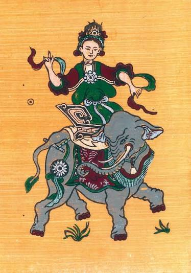

Bà Triệu là cách gọi quen thuộc của Triệu Thị Trinh, một nữ thủ lĩnh chống chính quyền Đông Ngô vào thế kỷ III. Triệu Thị Trinh (225 - 248) còn được ghi với các tên Triệu Quốc Trinh, Triệu Ẩu. Quê quán vùng Quan Yên, quận Cửu Chân, nay thuộc Thanh Hóa. Người thân anh trai Triệu Quốc Đạt, một hào trưởng - người có thế lực ở địa phương và cùng bà khởi nghĩa năm 248. Bà sống trong thời kỳ vùng đất Việt Nam nằm dưới sự cai trị của Đông Ngô, một trong ba nước thời Tam Quốc.
Sau khi Đông Hán sụp đổ năm 220, Giao Châu nằm dưới quyền cai trị của Đông Ngô. Chính quyền Đông Ngô duy trì chế độ cai trị và bóc lột, đồng thời huy động nhân lực, vật lực từ Giao Châu để phục vụ các nhu cầu của chính quyền. TTXVN ghi nhận chính sách nô dịch, đồng hóa và việc bắt nhiều thợ giỏi ở Giao Chỉ, Cửu Chân đưa về Trung Quốc đã làm mâu thuẫn giữa người dân địa phương và chính quyền đô hộ ngày càng gay gắt.
Sau khi Đông Hán sụp đổ năm 220, Giao Châu nằm dưới quyền cai trị của Đông Ngô. Chính quyền Đông Ngô duy trì chế độ cai trị và bóc lột, đồng thời huy động nhân lực, vật lực từ Giao Châu để phục vụ các nhu cầu của chính quyền. TTXVN ghi nhận chính sách nô dịch, đồng hóa và việc bắt nhiều thợ giỏi ở Giao Chỉ, Cửu Chân đưa về Trung Quốc đã làm mâu thuẫn giữa người dân địa phương và chính quyền đô hộ ngày càng gay gắt. Đây là bối cảnh quan trọng dẫn đến cuộc khởi nghĩa Bà Triệu năm 248.
Các cuộc khởi nghĩa, "Khởi nghĩa tại Cửu Chân" Bà Triệu cùng anh trai Triệu Quốc Đạt tập hợp lực lượng và dựng cờ khởi nghĩa. Theo các tài liệu lịch sử, nghĩa quân hoạt động tại khu vực núi Nưa, sau đó tiến đánh Tư Phố, trung tâm của quận Cửu Chân. Sau những thắng lợi ban đầu, nghĩa quân tiếp tục xây dựng lực lượng và mở rộng địa bàn hoạt động. "Mở rộng phong trào" Cuộc khởi nghĩa không chỉ giới hạn ở Cửu Chân mà nhanh chóng lan rộng sang nhiều khu vực khác của Giao Châu. Sự phát triển của nghĩa quân khiến chính quyền Đông Ngô phải điều quân đến đàn áp. Sử liệu được Bảo tàng Lịch sử Quốc gia dẫn lại cho biết phong trào đã khiến “toàn thể Châu Giao đều chấn động”. "Đông Ngô phản công" Đông Ngô cử Lục Dận sang Giao Châu để đàn áp cuộc khởi nghĩa. Trước lực lượng quân sự mạnh hơn của Đông Ngô, nghĩa quân dần gặp khó khăn. Cuộc khởi nghĩa cuối cùng thất bại và Bà Triệu hy sinh vào năm 248.
Qua nhiều thế hệ, Bà Triệu được nhân dân ghi nhớ như một biểu tượng của: "Lòng yêu nước", "Ý chí độc lập", "Tinh thần chống ngoại xâm", "Sự kiên cường, bất khuất", "Vai trò của người phụ nữ trong lịch sử dân tộc". Hình tượng Bà Triệu cũng được lưu truyền qua nhiều truyền thuyết, ca dao và câu chuyện dân gian, góp phần làm phong phú thêm đời sống văn hóa của Thanh Hóa. Một câu nói nổi tiếng thường được gắn với Bà Triệu là: "Tôi muốn cưỡi cơn gió mạnh, đạp luồng sóng dữ…" Câu nói thể hiện khát vọng chống áp bức và giành lại độc lập. Tuy nhiên, khi đưa lên web, ô nên giới thiệu đây là lời nói được sử liệu và truyền thống dân gian lưu truyền, thay vì khẳng định đó là lời được ghi âm/chép lại trực tiếp từ năm 248.
Bà Triệu là một trong những nhân vật góp phần tạo nên hình ảnh Thanh Hóa - vùng đất giàu truyền thống lịch sử và văn hóa. Bộ Văn hóa, Thể thao và Du lịch cũng xác định các di tích như Đền Bà Triệu là một phần quan trọng trong hệ thống di sản văn hóa của Thanh Hóa và trong định hướng phát huy giá trị di sản phục vụ du lịch.
Triệu Thị Trinh

Tranh chân dung Bà Triệu
Thông tin chung
khoảng 225 - 226
khoảng 248 (21 tuổi) Hậu Lộc, Cửu Chân, Giao Chỉ
Tự vẫn
Núi Tùng (xã Triệu Lộc, tỉnh Thanh Hóa ngày nay)
Đình làng Phú Điền,Đền Bà Triệu (Xã Triệu Lộc, Tỉnh Thanh Hóa)
Giao Châu (Việt Nam)
Việt cổ
Triệu Quốc Đạt (anh trai)